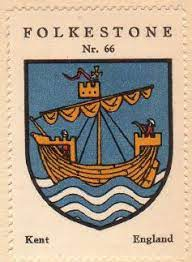

384570647 Beatrice de Folketon
Blev ca 52 år.

Född:
omkring 1110 Grimesthorpe, Lincolnshire, England.
Död:
1162 Grimesthorpe, Lincolnshire, England.
Barn:
Personhistoria
1110?
Födelse omkring 1110 Grimesthorpe, Lincolnshire, England
1162
Död 1162 Grimesthorpe, Lincolnshire, England